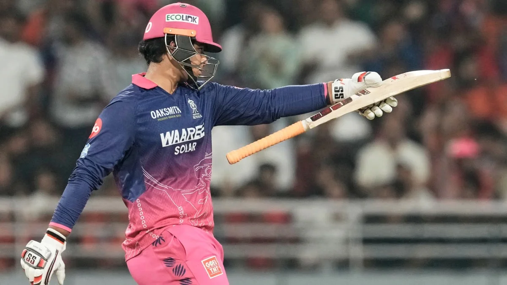
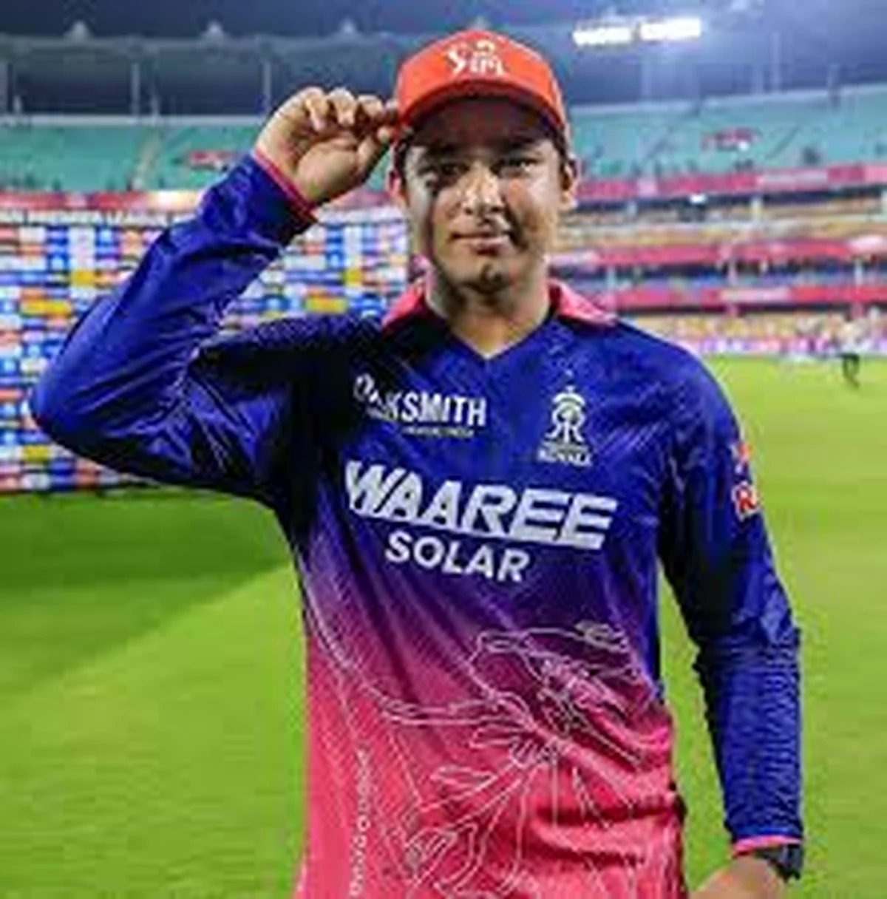

A Kid Walked Into a War Zone
Let's start with something that's easy to forget when you're scrolling through highlight reels and stat sheets: Vaibhav Suryavanshi is fifteen years old.
Fifteen. Most kids his age are figuring out algebra, arguing about which Marvel movie is the best, maybe sneaking an extra hour of screen time past bedtime. Suryavanshi is standing at the crease in an IPL playoff, staring down Kagiso Rabada running in at full pace, knowing that ball is coming straight at his ribs.
That was the scene during the IPL 2026 Qualifier 2. Gujarat Titans, facing elimination, decided their best strategy against the Rajasthan Royals' most dangerous batsman was simple: bowl short, bowl fast, bowl at his body. Rabada. Siraj. One after another. The ball whistling past his helmet, thudding into his chest guard, rearing up at his throat.
Not a single person in that stadium looked at Vaibhav Suryavanshi and thought "that's just another IPL batsman." Everyone could see a child being targeted by the best fast bowlers on the planet. And yet, the kid didn't flinch. Didn't back away. Didn't ask for a timeout to catch his breath.
He just kept batting.
The Numbers That Don't Make Sense

Here's where the story goes from interesting to genuinely unbelievable.
In IPL 2026, Vaibhav Suryavanshi scored 776 runs in 16 matches at a strike rate that would make most international batsmen feel inadequate. We're talking about a strike rate hovering around 238. That's not a typo. Two hundred and thirty-eight.
He hit 72 sixes in a single season. Seventy-two. Chris Gayle, the Universe Boss himself, held the record for the most sixes in a single IPL season: 59, set back in 2012 during that legendary 175-run innings season. A record people assumed would stand for years. Suryavanshi didn't just break it. He obliterated it by 13.
He became the fastest player in IPL history to reach 1,000 career runs, getting there in just 440 balls. He set the record for most boundaries in a single season with 133. He became the youngest player ever to cross 600 runs in one IPL campaign.
And he did all of this before his 16th birthday.
Vaibhav Suryavanshi debuted in IPL 2025 at age 14, making him the youngest debutant in tournament history. He scored 101 off just 38 balls against Gujarat Titans that year, becoming the youngest IPL centurion ever at 14 years and 32 days old.
Irfan Pathan Said What Everyone Was Thinking
This is where things got complicated. And honestly, kind of uncomfortable.
After watching that Qualifier 2 barrage of bodyline bowling, former India all-rounder Irfan Pathan posted something on social media that split the cricket world right down the middle. He wrote: "Bodyline bowling to stop a 15-year-old Vaibhav Suryavanshi doesn't fit well with me. I know he is playing against the big boys, but the father in me doesn't agree with that."
The response was immediate, loud, and brutal.
One side said Pathan was right. That regardless of talent, deliberately bowling bouncers at a child's head crosses a moral line that scorecards don't capture. That just because a 15-year-old can play at this level doesn't mean we should ignore what it looks like when grown men are physically intimidating a teenager.
The other side said Pathan was being soft. That if you're good enough to play in the IPL, you're good enough to face IPL bowling. That treating Suryavanshi differently would actually disrespect him, because it would mean acknowledging he doesn't belong there.
Both sides had a point. That's what made the whole thing so messy.
"Bodyline bowling to stop a 15-year-old doesn't fit well with me. The father in me doesn't agree with that."Irfan Pathan
But Pathan wasn't done stirring the pot. Earlier in the season, he'd floated a theory that Suryavanshi specifically targeted big-name bowlers but struggled against lesser-known ones. When the teenager got out for a golden duck to an unknown bowler named Praful Hinge, Pathan posted: "So my theory for Vaibhav Suryavanshi isn't wrong ;)"
That winky face did a lot of heavy lifting. Cricket Twitter went to war. Fans called Pathan jealous. Others said he was just doing honest analysis. Some pointed out that it's weird for a retired international cricketer to be publicly poking at a 15-year-old's failures. The whole thing turned into one of those internet arguments where everyone's yelling and nobody's actually listening.
The Question Nobody Wants to Answer
Here's the thing about the Suryavanshi debate that most people dance around without ever actually saying out loud: where is the line?
When a 15-year-old is playing professional sport at the highest level, facing 150 kph deliveries aimed at his body, performing under pressure that would crush most adults, travelling with a team of grown men for months at a time, being analyzed and criticized on national television — at what point does "incredible opportunity" become "too much, too soon"?
There's no easy answer. Sachin Tendulkar debuted for India at 16. He turned out fine. But for every Tendulkar, there are dozens of prodigies who burned out before they ever reached their potential. We just don't remember their names because nobody writes articles about the ones who quietly disappeared.
A social activist even raised the possibility that a 15-year-old playing professional cricket could technically be considered child labour. Most people dismissed this — and rightfully so, because sports participation for talented youth is skill development, not exploitation. But the fact that the question was even asked tells you something about how extreme this situation is.
Suryavanshi isn't just playing cricket. He's living inside a pressure cooker that most of us can't even imagine. And he's doing it at an age where his brain, his body, and his emotional resilience are still developing.
He Answered With His Bat

The most impressive thing about Vaibhav Suryavanshi isn't any individual innings or any specific record. It's what he did with all the noise around him.
Think about what this kid had swirling around him during IPL 2026. A former India cricketer publicly questioning his game. A literal debate about whether he should even be playing. Bowlers targeting his body with short-pitched missiles. Social media dissecting every single ball he faced. Cameras following his every reaction.
And through all of it, he just kept scoring runs. Not quietly, not cautiously, but with the kind of violent, fearless batting that makes you forget you're watching a teenager.
There's something almost poetic about it. Everyone around him was arguing about whether he belonged. He never joined the argument. He just let his bat do the talking, and his bat said more than any tweet or press conference ever could.
772 runs. 72 sixes. Records that stood for over a decade, broken by someone who can't legally drive a car.
What This Kid Actually Means for Cricket
Step back from the controversies for a second. Forget Irfan Pathan's tweets. Forget the bodyline debate. Forget the child labour noise. Just look at what's actually happening here.
Indian cricket has always produced freaks of nature. Virat Kohli at 18 was special. Sachin at 16 was otherworldly. But what Suryavanshi is doing at 15 exists in a category that doesn't have a name yet. He's not just competing with professionals. He's embarrassing them. He's not just surviving — he's dominating.
The scary part? He's going to get better. He's going to get stronger. He's going to learn things about his own game that he doesn't even know exist yet. Right now, he's a 15-year-old playing on raw talent, instinct, and an absolutely ridiculous amount of courage. Imagine what he looks like at 20 with five more years of experience, physical maturity, and coaching behind him.
That's either the most exciting thought in cricket right now, or the most terrifying one, depending on which team you support.
But here's what matters most, and it's the part of this story that tends to get lost in all the arguments: somewhere behind those stats, behind the records and the controversies and the million-dollar IPL contract, there's a kid. A 15-year-old kid from Bihar who loves cricket enough to stand in front of Kagiso Rabada at full pace and not take a step backwards.
That's not a stat. That's not a talking point. That's just heart. And it might be the most impressive thing about him.
Whatever happens next in Vaibhav Suryavanshi's career, one thing is already clear: Indian cricket hasn't seen anything quite like this before. And it probably won't again for a very long time.
📷 Image Credits: Images via BCCI/IPL
Frequently Asked Questions
How old is Vaibhav Suryavanshi?
Vaibhav Suryavanshi was born on March 27, 2011, making him 15 years old during the IPL 2026 season.
What records did Vaibhav Suryavanshi break in IPL 2026?
He scored 776 runs in 16 matches, hit 72 sixes (breaking Chris Gayle's record of 59), became the fastest to 1,000 IPL career runs in just 440 balls, and set the record for most boundaries in a single IPL season with 133.
Why did Irfan Pathan criticize bowling tactics against Suryavanshi?
During the IPL 2026 Qualifier 2, Gujarat Titans bowlers like Kagiso Rabada and Mohammed Siraj bowled aggressive short-pitched deliveries at the 15-year-old. Irfan Pathan said bodyline bowling against a teenager didn't sit right with him as a father, sparking a massive debate.
Which IPL team does Vaibhav Suryavanshi play for?
Vaibhav Suryavanshi plays for the Rajasthan Royals in the Indian Premier League.